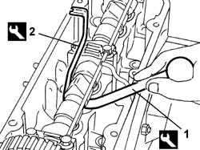
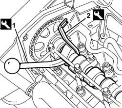
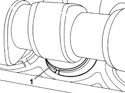
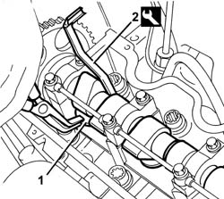

1036H10 valve tappets - check and adjust clearance
- Path
- Procedures > 10 ENGINE > 1036 TIMING SYSTEM > 1036H TAPPETS AND ROCKER SHAFTS > 1036H10 valve tappets - check and adjust clearance
- Kind
- repair procedure (removal / refitting; the operation number is the code)
- Applies to
- all engines; all production periods
- Interactive page
- https://sloeber94.github.io/elrnDB-fDbl/en/#/2584215
Applies to: all engines; all production periods
1048A10 air cleaner filtering element - replace
1016A20 single cam cover - r + r and replace gasket
1036H14 valve tappets - check clearance
1. Lower the tappet using the appropriate tool.
 | Name | Country |
|---|---|---|
1 | Lever | 1.860.443.000 |
2. Fit a tool to hold the tappet down, then withdraw the pressure lever fitted previously.
| Name | Country |
|---|---|---|
2 | Lever | 1.860.724.001 |

Applies to: all engines; all production periods
1016A22 cam cover with fuel duct - r + r and replace gasket
1036H14 valve tappets - check clearance
1. Lower the tappet using the appropriate tool.
| Name | Country |
|---|---|---|
1 | Lever | 1.860.443.000 |
2. Fit a tool to hold the tappet down, then withdraw the pressure lever fitted previously.
| Name | Country |
|---|---|---|
2 | Lever | 1.860.724.001 |

Applies to: all engines; all production periods
Check the valve clearances 1036H14 valve tappets - check clearance .
Adjust the valve clearances 1036H18 VALVE TAPPETS - Adjust. following clearance check .
Applies to: all engines; all production periods
1. Remove the valve clearance adjustment pad and replace it using a suitable shim.
Remove the tool for keeping the tappet lowered.
Repeat the above procedure for the remaining valves.

Applies to: all engines; all production periods
1. Remove the valve clearance adjustment pad and replace it using a suitable shim.
2. Remove the tool for keeping the tappet lowered.
Repeat the above procedure for the remaining valves.

Applies to: all engines; all production periods
1036H14 valve tappets - check clearance
Applies to: all engines; all production periods
Topics linked from this page (5)
- 1016A20 single cam cover - r + r and replace gasket
- 1016A22 cam cover with fuel duct - r + r and replace gasket
- 1036H14 valve tappets - check clearance
- 1036H18 VALVE TAPPETS - Adjust. following clearance check
- 1048A10 air cleaner filtering element - replace
Topics that link to this page (10)
- B13 ENGINE STARTS WITH DIFFICULTY'
- D10 ENGINE IDLE IRREGULAR
- S01 ENGINE KNOCK
- 0010K20 20,000km service coupon, emission control version
- 0010K40 40,000km service coupon, emission control versions
- 0010K60 60,000km service coupon - emission control versions
- 0010K80 80,000km service coupon - emission control versions
- 0010M20 120,000km service coupon, emission control versions
- 0010M60 160,000km service coupon - emission control versions
- 0010M80 180,000km service coupon - emission control versions